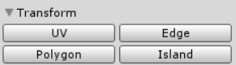
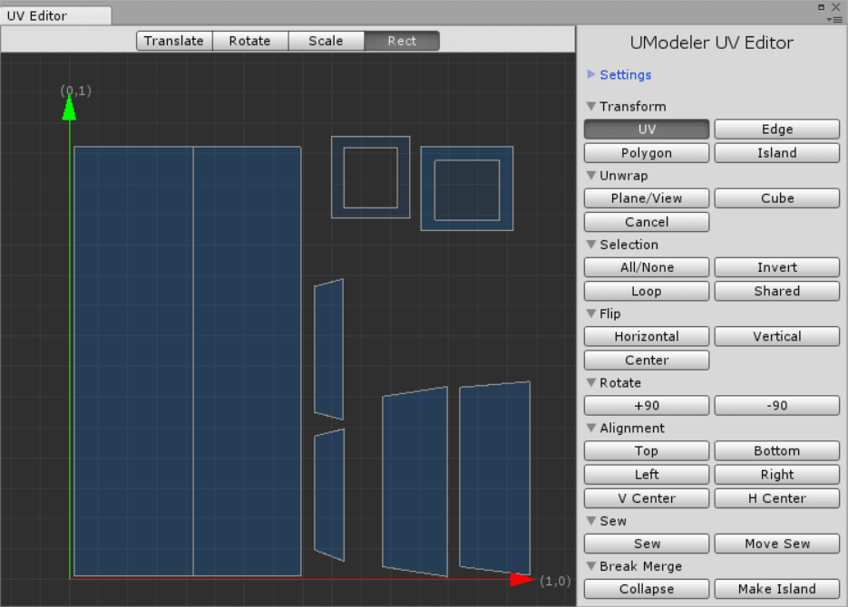
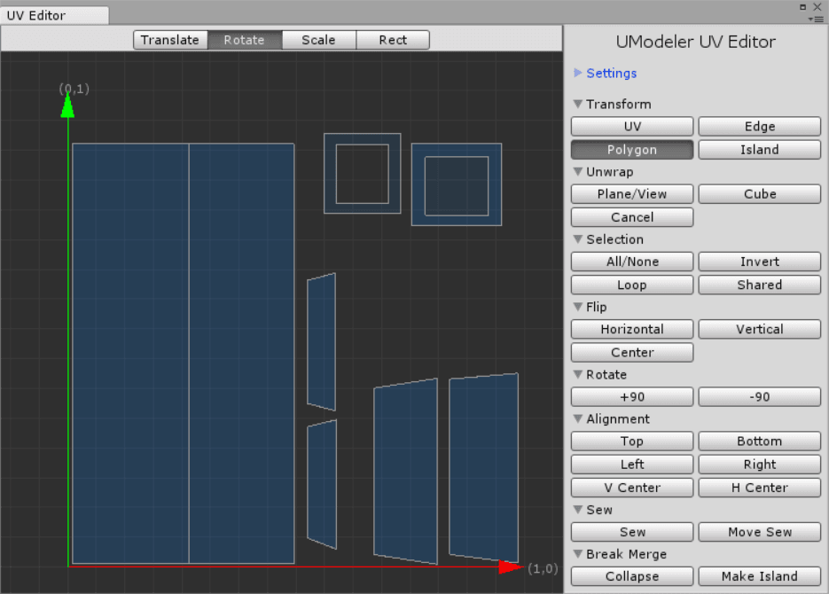
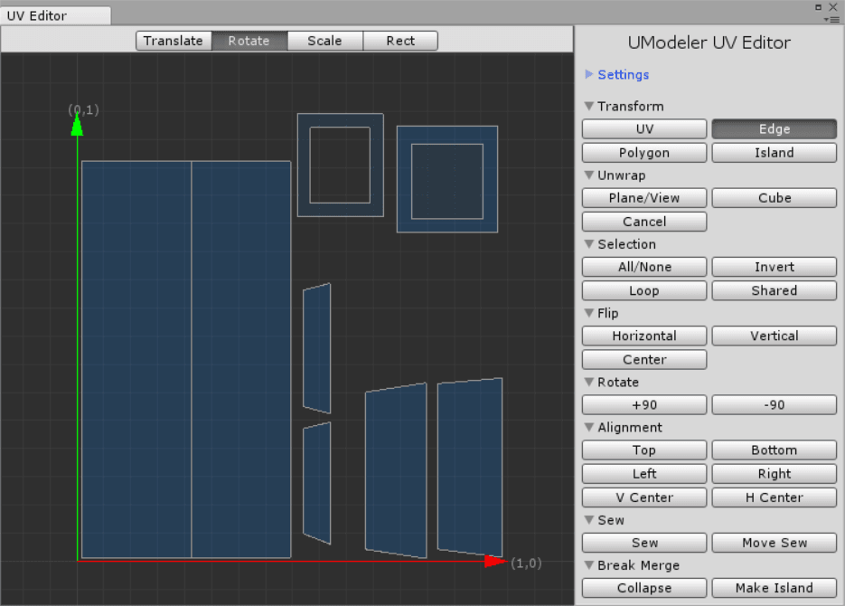

Transform¶
There are 4 types of elements you can select and transform.• UV - A point. Two edges meet at one UV.• Edge - Two connected UVs.• Polygon - A flat closed shape which consists of n-UVs and n-edges• Island - A set of polygonsA way of selecting them is to click on each element or drag a mouse holdingLMBto include elements in a rectangle. HoldingCTRLenables you to select elements successively without canceling former selection.The element type is determined by what tool among UV, Edge, Polygon and Island on the inspector is chosen.Element types which can be chosen on the inspector.
Once several elements are selected, they can be transformed using 4 sorts of gizmos.Each gizmo can be switched by clicking on a corresponding button on the top toolbar or pressingW,E,RorTlike you do in Unity.If you drag an element, the element will follow the mouse cursor.Selecting and transfoming UVs
{kind=link}
Pivot¶
The default pivot position for rotating and scaling is the center of the selected elements. If you want to change the pivot location, useCross Cursor, which can be enabled in Settings on the inspector. The location of theCross Cursorwill be the pivot when you transform elements while it is visible on the working area.Using
Cross Cursorwhile scaling and rotatin
{kind=link}
Snap¶
WithSnapenabled you can move or rotate the selected elements by a specified unit. TheseSnapparameters can be set inSettingson the inspector.Applying Snap to moving and rotating elements.
{kind=link}
Separate Transfoming¶
Usually transforming polygons affects the adjacent polygons. It means that all Overlapped UVs will be transformed together. However holdingSHIFTwill make you transform elements separately. Even though several UVs occupied the same position, only one UV will be affected.
{kind=link}
{kind=link}
Overlapped Edge¶
An edge in uv space can be overlapped the other edge in 3D space so it will be helpful to display the overlapped edges of the selected edges to make it easiser to edit UVs. Therefore The overlapped edges are displayed as green edges.
Overlapped edges are represented in green.